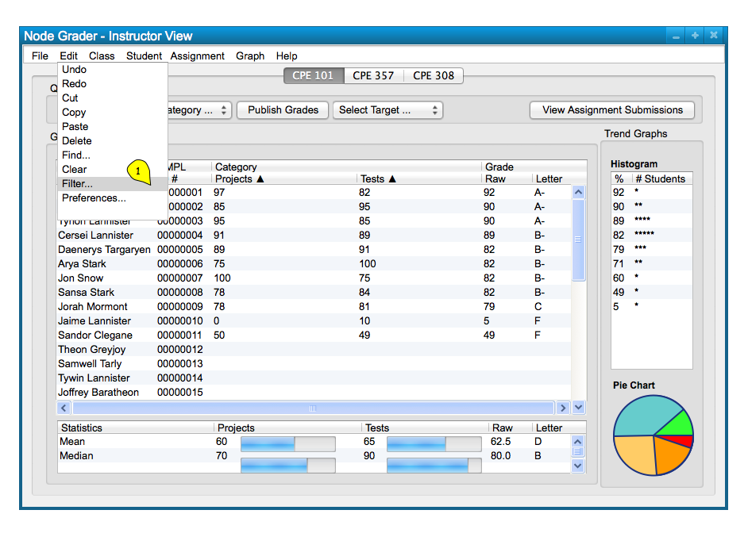
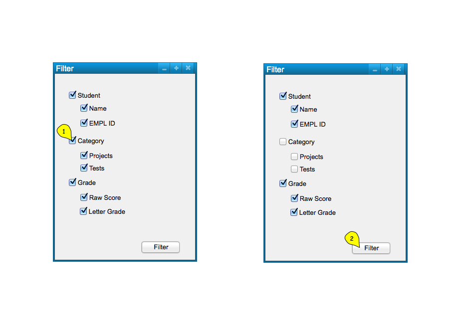
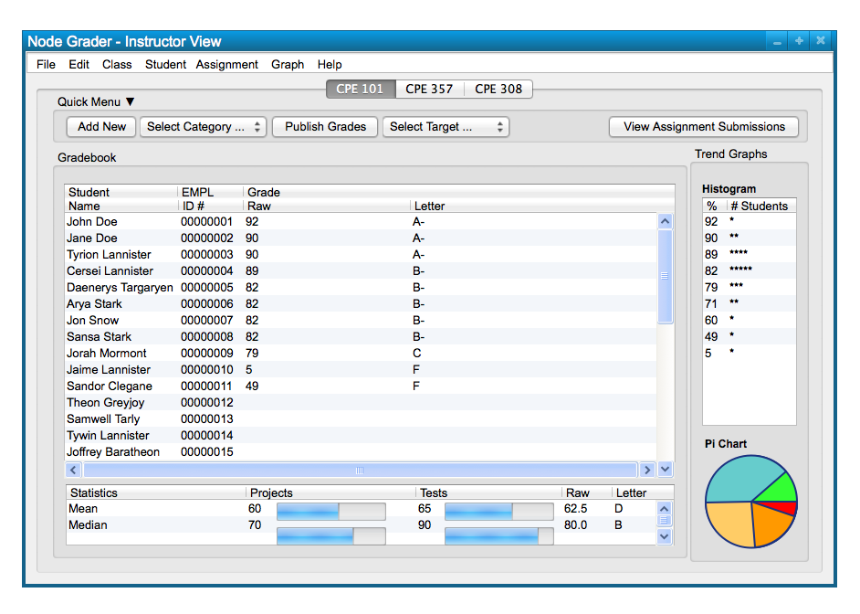

The class spreadsheet displays student names, EMPL IDs, Categories, Raw Scores, and Letter Grades by default. These options display options can be filtered though, by right-clicking the top bar of the spreadsheet that contains each field and toggling which fields are displayed. To filter a column to show or be hidden, the user selects "Filter" command under the "Edit". Figure 1 below shows the path to get to the filter menu.

Figure 1: Filter path.
Upon selecting the "Filter" menu command, the user is presented with a menu that shows a tree-like list of all items
that can possibly be displayed, with check-boxes to toggle each filed to be displayed or hidden. This allows users to show or hide entire categories or specific assignments and more. Figure 2 below shows the menu with some changes made to the filter that will be displayed. This can be confirmed with the Filter button at the bottom.

Figure 2: Filter dialog.
Figure 3 shows the response to the user's filtered selections. The hidden fields can be shown again by going back to filter and toggling the options on again.

Figure 3: Filter Result.
Following the same path and repeating the selection of fields will toggle them to be shown or hidden, as shown above. Filtering allows yet another level of display organization for users that wish to see or not see data in the spreadsheet.